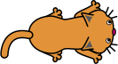

Katz und Maus
In diesem Kapitel werden wir zusammen ein kleines Spiel programmieren. Mit Scratch lassen sich kleine Spiele relativ leicht umsetzen.Wenn du nicht alles verstehst, mach dir keine Sorgen. Wir werden in späteren Kapitel alles noch einmal sorgfältig anschauen.
Wir werden ein Katz- und Mausspiel programmieren. Der Spieler steuert mit der Maus eine Katze, die Mäuse fangen soll. Ein Spiel dauert jeweils 20 Sekunden und es werden die Anzahl der gefangen Mäuse gezählt.
Gehe auf Scratch und erstelle ein neues Projekt. Klicke unten rechts bei Bühne auf das Bühnenbild 1 und zeichne ein grosses grünes Rechteck. Die Bühne sieht nun aus wie ein grünes Rasenstück auf welchem dann die Katze die Mäuse fängt.
Die Katze
Füge eine neue Katzenfigur (Cat 2) hinzu, siehe Abb. 1. Übernimm für diese Figur den Code von Prog. 1.

Abb. 1 – Kostüm der Figur "Cat 2".
Wenn die grüne Flagge angeklickt
gehe zu x:(0) y:(0)
zeige dich
setze Stoppuhr zurück
wiederhole bis < (Stoppuhr) > (20) >
falls < (Entfernung von (Mauszeiger v)) > (5)>, dann
gehe (5) er Schritt
ende
drehe dich zu (Mauszeiger v)
ende
verstecke dich
stoppe [alles v]
Prog. 1 – Programm für die Katze
Wir lesen dieses Programm gemeinsam durch. Programme sind wie Kochrezepte. Sie werden von oben nach unten schrittweise ausgeführt.
Der erste Befehl Wenn grüne Flagge angeklickt wird wird nur dann ausgeführt, wenn man oberhalb der Bühne auf die grüne Flagge klickt.
Mit dem zweiten Befehl gehe zu x: 0 y: 0 wird die Katze in die Mitte der Bühne verschoben. Anschliessend wird mit zeige dich, die Katze angezeigt.
Ein Spiel soll jeweils 20 Sekunden dauern. Mit dem Befehl setze Stoppuhr zurück wird die interne Stoppuhr auf null gesetzt.
Jetzt kommt der Zangenbefehl wiederhole bis Stoppuhr > 20 . Das bedeutet, dass alle Befehle in der Zange wiederholt werden, bis 20 Sekunden abgelaufen sind.
In der Zange gibt es einen weiteren Zangenbefehl falls Entfernung von Mauszeiger > 5 , dann. Die Befehle innerhalb von diesem Zangenbefehl werden nur dann ausgeführt, wenn die Katz weiter als 5 Schritte vom Mauszeiger entfernt ist. Falls dies der Fall ist, bewegt sich die Katze mit gehe 5 er Schritt vorwärts.
Zuletzt wird mit drehe dich zu Mauszeiger die Katze immer in Richtung des Mauszeigers ausgerichtet. Da sich alle diese Befehle in der Zange des wiederhole bis... Befehls befinden, werden sie immerzu wiederholt. D.h. die Katze wird sich immer auf den Mauszeiger ausrichten und sich in Richtung von diesem bewegen (wenn sie mehr als 5 Schritte von ihm entfernt ist). Du kannst das Programm testen, indem du auf die grüne Flagge klickst.
Nach dem wiederhole bis ... Befehl , verstecken wir die Katze mit verstecke dich und beenden das Programm mit stoppe [alles].
Die Maus
Weiter geht es mit der Maus. Füge die Mausfigur (Mouse1) hinzu und übernimm für sie den folgenden Code.

Wenn die grüne Flagge angeklickt setze [Punkte v] auf (0) verstecke dich wiederhole fortlaufend gehe zu (Zufallsposition v) setze Richtung auf (Zufallszahl von (0) bis (360)) Grad zeige dich warte bis < wird [Katze v] berührt? > verstecke dich ändere [Punkte v] um (1) spiele Klang [Plopp v] ganz warte (Zufallszahl von (0) bis (2)) Sekunden ende
Prog. 2 – Programm für die Maus